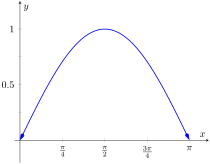
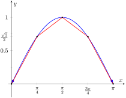
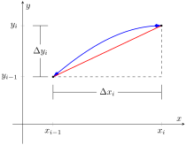

In previous sections we have used integration to answer the following questions:
Given a region, what is its area?
Given a solid, what is its volume?
In this section, we address two related questions:
Given a curve, what is its length? This is often referred to as arc length.
Given a solid, what is its surface area?
Subsection7.4.1Arc Length
Consider the graph of \(y=\sin(x)\) on \([0,\pi]\) given in Figure 7.4.1.(a). How long is this curve? That is, if we were to use a piece of string to exactly match the shape of this curve, how long would the string be?
As we have done in the past, we start by approximating; later, we will refine our answer using limits to get an exact solution.
The length of straight-line segments is easy to compute using the Distance Formula. We can approximate the length of the given curve by approximating the curve with straight lines and measuring their lengths.
(a)
(b)
Figure7.4.1.Graphing \(y=\sin(x)\) on \([0,\pi]\) and approximating the curve with line segments
In Figure 7.4.1.(b), the curve \(y=\sin(x)\) has been approximated with 4 line segments (the interval \([0,\pi]\) has been divided into 4 subintervals of equal length). It is clear that these four line segments approximate \(y=\sin(x)\) very well on the first and last subinterval, though not so well in the middle. Regardless, the sum of the lengths of the line segments is \(3.79\text{,}\) so we approximate the arc length of \(y=\sin(x)\) on \([0,\pi]\) to be \(3.79\text{.}\)
In general, we can approximate the arc length of \(y=f(x)\) on \([a,b]\) in the following manner. Let \(a=x_0 \lt x_1 \lt \ldots \lt x_{n-1}\lt x_{n}=b\) be a partition of \([a,b]\) into \(n\) subintervals. Let \(\dx_i\) represent the length of the \(i\)th subinterval \([x_{i-1},x_{i}]\text{.}\)

Figure7.4.2.Zooming in on the \(i\)th subinterval \([x_{i-1},x_{i}\)] of a partition of \([a,b]\)
Figure 7.4.2 zooms in on the \(i\)th subinterval where \(y=f(x)\) is approximated by a straight line segment. The dashed lines show that we can view this line segment as the hypotenuse of a right triangle whose sides have length \(\dx_i\) and \(\dy_i\text{.}\) Using the Pythagorean Theorem, the length of this line segment is
Summing over all subintervals gives an arc length approximation
\begin{equation*}
L \approx \sum_{i=1}^n \sqrt{\dx_i^2 + \Delta y_i^2}\text{.}
\end{equation*}
As shown here, this is not a Riemann Sum. While we could conclude that taking a limit as the subinterval length goes to zero gives the exact arc length, we would not be able to compute the answer with a definite integral. We need first to do a little algebra.
In the above expression factor out a \(\dx_i^2\) term:
This is nearly a Riemann Sum. Consider the \(\Delta y_i^2/\dx_i^2\) term. The expression \(\Delta y_i/\dx_i\) measures the “change in \(y\)/change in \(x\text{,}\)” that is, the “rise over run” of \(f\) on the \(i\)th subinterval. The Mean Value Theorem of Differentiation (Theorem 3.2.3) states that there is a \(c_i\) in the \(i\)th subinterval where \(\fp(c_i) = \Delta y_i/\dx_i\text{.}\) Thus we can rewrite our above expression as:
Let \(f\) be differentiable on \([a,b]\text{,}\) where \(\fp\) is also continuous on \([a,b]\text{.}\) Then the arc length of \(f\) from \(x=a\) to \(x=b\) is
\begin{equation*}
L = \int_a^b \sqrt{1+\fp(x)^2}\, dx\text{.}
\end{equation*}
As the integrand contains a square root, it is often difficult to use the formula in Theorem 7.4.3 to find the length exactly. When exact answers are difficult to come by, we resort to using numerical methods of approximating definite integrals. The following examples will demonstrate this.
Example7.4.4.Finding arc length.
Find the arc length of \(f(x) = x^{3/2}\) from \(x=0\) to \(x=4\text{.}\)
We find \(\fp(x)= \frac32x^{1/2}\text{;}\) note that on \([0,4]\text{,}\)\(f\) is differentiable and \(\fp\) is also continuous. Using the formula, we find the arc length \(L\) as
This function was chosen specifically because the resulting integral can be evaluated exactly. We begin by finding \(\fp(x) = x/4-1/x\text{.}\) The arc length is
Figure7.4.7.A graph of \(f(x) =\frac18x^2-\ln(x)\) from Example 7.4.6
A graph of \(f\) is given in Figure 7.4.7; the portion of the curve measured in this problem is in bold.
The previous examples found the arc length exactly through careful choice of the functions. In general, exact answers are much more difficult to come by and numerical approximations are necessary.
This is somewhat of a mathematical curiosity; in Example 5.4.10 we found the area under one “hump” of the sine curve is 2 square units; now we are measuring its arc length.
The setup is straightforward: \(f(x) = \sin(x)\) and \(\fp(x) = \cos(x)\text{.}\) Thus
\begin{equation*}
L = \int_0^\pi \sqrt{1+\cos^2(x)}\, dx\text{.}
\end{equation*}
This integral cannot be evaluated in terms of elementary functions so we will approximate it with Simpson's Method with \(n=4\text{.}\)
Table7.4.9.A table of values of \(y=\sqrt{1+\cos^2(x) }\) to evaluate a definite integral in Example 7.4.8
\(x\)
\(\sqrt{1+\cos^2(x) }\)
\(0\)
\(\sqrt{2}\)
\(\pi/4\)
\(\sqrt{3/2}\)
\(\pi/2\)
\(1\)
\(3 \pi/4\)
\(\sqrt{3/2}\)
\(\pi\)
\(\sqrt{2}\)
Figure 7.4.9 gives \(\sqrt{1+\cos^2(x) }\) evaluated at 5 evenly spaced points in \([0,\pi]\text{.}\) Simpson's Rule then states that
Using a computer with \(n=100\) the approximation is \(L\approx 3.8202\text{;}\) our approximation with \(n=4\) is quite good.
Subsection7.4.2Surface Area of Solids of Revolution
We have already seen how a curve \(y=f(x)\) on \([a,b]\) can be revolved around an axis to form a solid. Instead of computing its volume, we now consider its surface area.
Figure7.4.10.Establishing the formula for surface area
We begin as we have in the previous sections: we partition the interval \([a,b]\) with \(n\) subintervals, where the \(i\)th subinterval is \([x_{i-1},x_{i}]\text{.}\) On each subinterval, we can approximate the curve \(y=f(x)\) with a straight line that connects \(f(x_{i-1})\) and \(f(x_{i})\) as shown in Figure 7.4.10.(a). Revolving this line segment about the \(x\)-axis creates part of a cone (called a frustum of a cone) as shown in Figure 7.4.10.(b). The surface area of a frustum of a cone is
\begin{equation*}
2\pi\cdot\,\text{length} \,\cdot\,\text{average of the two radii \(R\) and \(r\)}\text{.}
\end{equation*}
The length is given by \(L\text{;}\) we use the material just covered by arc length to state that
Since \(f\) is a continuous function, the Intermediate Value Theorem states there is some \(d_i\) in \([x_{i-1},x_{i}]\) such that \(\ds f(d_i) = \frac{f(x_{i-1})+f(x_{i})}2\text{;}\) we can use this to rewrite the above equation as
(When revolving \(y=f(x)\) about the \(y\)-axis, the radii of the resulting frustum are \(x_{i-1}\) and \(x_{i}\text{;}\) their average value is simply the midpoint of the interval. In the limit, this midpoint is just \(x\text{.}\) This gives the second part of Theorem 7.4.11.)
Example7.4.12.Finding surface area of a solid of revolution.
Find the surface area of the solid formed by revolving \(y=\sin(x)\) on \([0,\pi]\) around the \(x\)-axis, as shown in Figure 7.4.13.
The integration step above is nontrivial, utilizing the integration method of Trigonometric Substitution from Section 6.4.
It is interesting to see that the surface area of a solid, whose shape is defined by a trigonometric function, involves both a square root and an inverse hyperbolic trigonometric function.
Example7.4.14.Finding surface area of a solid of revolution.
Find the surface area of the solid formed by revolving the curve \(y=x^2\) on \([0,1]\) about:
The solid formed by revolving \(y=x^2\) around the \(x\)-axis is graphed in Figure 7.4.15.(a).
Since we are revolving around the \(y\)-axis, the “radius” of the solid is not \(f(x)\) but rather \(x\text{.}\) Thus the integral to compute the surface area is:
\begin{align*}
SA \amp = 2\pi\int_0^1x\sqrt{1+(2x)^2}\, dx.\\
\end{align*}
This integral can be solved using substitution. Set \(u=1+4x^2\text{;}\) the new bounds are \(u=1\) to \(u=5\text{.}\) We then have
The solid formed by revolving \(y=x^2\) about the \(y\)-axis is graphed in Figure 7.4.15.(b).
Our final example is a famous mathematical “paradox.”
Example7.4.16.The surface area and volume of Gabriel's Horn.
Consider the solid formed by revolving \(y=1/x\) about the \(x\)-axis on \([1,\infty)\text{.}\) Find the volume and surface area of this solid. (This shape, as graphed in Figure 7.4.17, is known as “Gabriel's Horn” since it looks like a very long horn that only a supernatural person, such as an angel, could play.)
Gabriel's Horn has a finite volume of \(\pi\) cubic units. Since we have already seen that regions with infinite length can have a finite area, this is not too difficult to accept.
We now consider its surface area. The integral is straightforward to setup:
\begin{align*}
SA \amp = 2\pi\int_1^\infty \frac{1}{x}\sqrt{1+1/x^4}\, dx.\\
\end{align*}
Integrating this expression is not trivial. We can, however, compare it to other improper integrals. Since \(1\lt \sqrt{1+1/x^4}\) on \([1,\infty)\text{,}\) we can state that
By Key Idea 6.8.16, the improper integral on the left diverges. Since the integral on the right is larger, we conclude it also diverges, meaning Gabriel's Horn has infinite surface area.
Hence the “paradox”: we can fill Gabriel's Horn with a finite amount of paint, but since it has infinite surface area, we can never paint it.
Somehow this paradox is striking when we think about it in terms of volume and area. However, we have seen a similar paradox before, as referenced above. We know that the area under the curve \(y=1/x^2\) on \([1,\infty)\) is finite, yet the shape has an infinite perimeter. Strange things can occur when we deal with the infinite.
A standard equation from physics is “Work = force × distance”, when the force applied is constant. In Section 7.5 we learn how to compute work when the force applied is variable.
Exercises7.4.3Exercises
Terms and Concepts
1.
T/F: The integral formula for computing Arc Length was found by first approximating arc length with straight line segments.
2.
T/F: The integral formula for computing Arc Length includes a square-root, meaning the integration is probably easy.
Problems
Exercise Group.
In the following exercises, find the arc length of the function on the given interval.
3.
\(\ds f(x) = x\) on \([0, 1]\text{.}\)
4.
\(\ds f(x) = \sqrt{8}x\) on \([-1, 1]\text{.}\)
5.
\(\ds f(x) = \frac13x^{3/2}-x^{1/2}\) on \([0,1]\text{.}\)
6.
\(\ds f(x) = \frac1{12}x^{3}+\frac1x\) on \([1,4]\text{.}\)
7.
\(\ds f(x) = 2x^{3/2}-\frac16\sqrt{x}\) on \([0,9]\text{.}\)
8.
\(\ds f(x) = \cosh(x)\) on \([-\ln(2) , \ln(2) ]\text{.}\)
9.
\(\ds f(x) = \frac12\big(e^x+e^{-x}\big)\) on \([0, \ln(5) ]\text{.}\)
10.
\(\ds f(x) = \frac1{12}x^5+\frac1{5x^3}\) on \([0.1, 1]\text{.}\)
11.
\(\ds f(x) = \ln\big(\sin(x) \big)\) on \([\pi/6, \pi/2]\text{.}\)
12.
\(\ds f(x) = \ln\big(\cos(x) \big)\) on \([0, \pi/4]\text{.}\)
Exercise Group.
In the following exercises, set up the integral to compute the arc length of the function on the given interval. Do not evaluate the integral.
13.
\(\ds f(x) = x^2\) on \([0, 1]\text{.}\)
14.
\(\ds f(x) = x^{10}\) on \([0, 1]\text{.}\)
15.
\(\ds f(x) = \sqrt{x}\) on \([0, 1]\text{.}\)
16.
\(\ds f(x) = \ln(x)\) on \([1, e]\text{.}\)
17.
\(\ds f(x) = \sqrt{1-x^2}\) on \([-1, 1]\text{.}\) (Note: this describes the top half of a circle with radius 1.)
18.
\(\ds f(x) = \sqrt{1-x^2/9}\) on \([-3, 3]\text{.}\) (Note: this describes the top half of an ellipse with a major axis of length 6 and a minor axis of length 2.)
19.
\(\ds f(x) = \frac1x\) on \([1,2]\text{.}\)
20.
\(\ds f(x) = \sec(x)\) on \([-\pi/4,\pi/4]\text{.}\)
Exercise Group.
In the following exercises, use Simpson's Rule, with \(n=4\text{,}\) to approximate the arc length of the function on the given interval. Note: these are the same problems as in Exercises 7.4.3.13– Exercise 7.4.3.20.
21.
\(\ds f(x) = x^2\) on \([0, 1]\text{.}\)
22.
\(\ds f(x) = x^{10}\) on \([0, 1]\text{.}\)
23.
\(\ds f(x) = \sqrt{x}\) on \([0, 1]\text{.}\) (Note: \(\fp(x)\) is not defined at \(x=0\text{.}\))
24.
\(\ds f(x) = \ln(x)\) on \([1, e]\text{.}\)
25.
\(\ds f(x) = \sqrt{1-x^2}\) on \([-1, 1]\text{.}\) (Note: \(\fp(x)\) is not defined at the endpoints.)
26.
\(\ds f(x) = \sqrt{1-x^2/9}\) on \([-3, 3]\text{.}\) (Note: \(\fp(x)\) is not defined at the endpoints.)
27.
\(\ds f(x) = \frac1x\) on \([1,2]\text{.}\)
28.
\(\ds f(x) = \sec(x)\) on \([-\pi/4,\pi/4]\text{.}\)
Exercise Group.
In the following exercises, find the surface area of the described solid of revolution.
29.
The solid formed by revolving \(y=2x\) on \([0,1]\) about the \(x\)-axis.
30.
The solid formed by revolving \(y=x^2\) on \([0,1]\) about the \(y\)-axis.
31.
The solid formed by revolving \(y=x^3\) on \([0,1]\) about the \(x\)-axis.
32.
The solid formed by revolving \(y=\sqrt{x}\) on \([0,1]\) about the \(x\)-axis.
33.
The sphere formed by revolving \(y=\sqrt{1-x^2}\) on \([-1,1]\) about the \(x\)-axis.